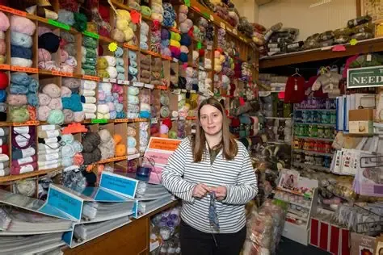
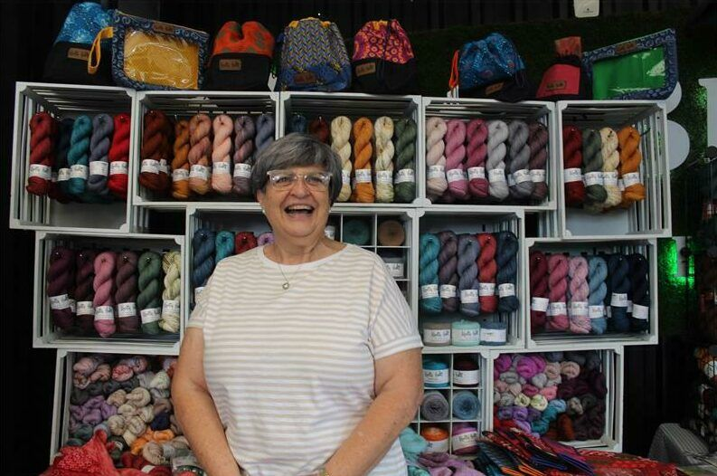

The world of yarn
Background
Into Yarn is a Pretoria-based yarn and craft business serving the local knitting and crochet community. Pretoria has an active craft culture, sustained by local industries and experienced yarn traders.

Mission
Into Yarn aims to offer quality, affordable yarn, materials and craft supplies, while supporting crafters of all skill levels with guidance and patterns.
Vision
Our vision is to create a welcoming community centre where people can enjoy creativity, social connection and the healing benefits of knitting and crochet.

Target market
Knitters and crocheters, social crafters and craft admirers. Our focus on community and craft activities reflects Pretoria’s established local craft culture.